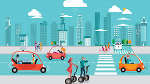
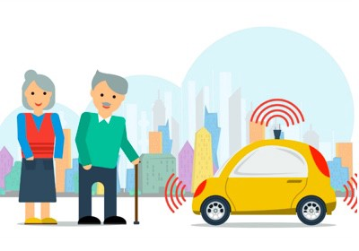

Autonomous vehicles will change how humans interact with computers and other humans. The relationship between the driver and the vehicle and the driver and other passengers will be completely different as more and more control of the car is handed over to the algorithms. People will need to adapt in order to properly interact with this newfound technology. Nevertheless, self-driving cars need to be designed such that they are suitable for a diverse audience.
Self-driving cars are going to revolutionize human to computer and human to human interaction. While simulating experiences in an autonomous vehicle, many designers explored how to design the interior of a self-driving car such that both social interaction and interaction with the technology itself can be optimized [1]. Some of the proposed designs suggested complete detachment from the vehicle. This prioritizes more social interaction between other people in the vehicle. Other designs were more similar to the arrangement of traditional cars to increase awareness of the surroundings and the car's decisions. The simulations revealed that design of the self-driving car itself can impact the behavior of its users.
Considering human to human interactions, autonomous cars can hypothetically create bubbles within society. With taxi drivers and the recent prominence of ride-sharing apps, traditional cars allow for greater interaction with different types of people. However, with self-driving cars, many users may isolate themselves socially creating a less interactive environment compared to what exists currently. On the other hand, the advent of robotaxis may preserve this aspect of human interaction.
One of the many advantages of autonomous vehicles is that it increases accessibility for less abled users. With traditional cars, it becomes difficult for elderly people and people with limited mobility to travel freely. Elderly drivers can be unaware of certain aspects of their surroundings and make costly mistakes while driving. Autonomous vehicles are likely to solve the problem brought up by the elderly driver while promoting social interaction among the elderly [2]. Designers of autonomous vehicles must take this into account and ensure that this technology is extremely easy to use for elderly people.
Assistive technologies can even open up the prospects of a beneficial scenario for the management of the public-health crisis posed by dementia and population ageing [3]. Self-driving cars can help us better take care of the elderly and other people in need of assistance by allowing them to easily reach places they need to go. For people with dementia, autonomous vehicles can remember their most important destinations so that these people have a fail safe when they forget what they were doing. Self-driving cars can redefine the social possibilities that these people had before.
Implementing self-driving cars into the current system is going to be a challenging task. Autonomous vehicles are a disruptive technology. Self-driving cars will require the creation of new regulations for road-based transport. With the implementation of new rules and regulations, several social actors will be able to influence the design and arrangements for these technologies [4]. It is up to policy makers to decide whether self-driving cars should be designed to fit within the current road system or if the road systemn should be redesigned around autonomous vehicles. Either way, these regulations need to make sure that the introduction of self driving cars is beneficial to all parties involved.